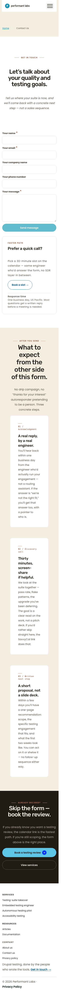
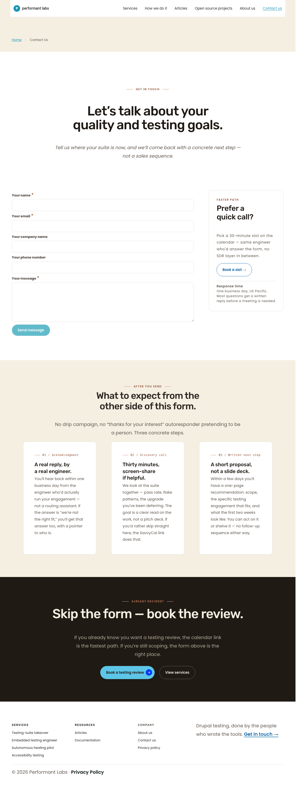

/ · 375 viewport · full-page
/ · 1280 viewport · full-page/contact-us and / show clean hero / form / mid-page content / footer chrome with no clipping, no overflow, no horizontal scroll. Header is canonical at both viewports (hamburger < 992; full inline nav ≥ 992; no CTA pill). Footer is byte-identical across pages. /contact-us H1 ("Let's talk about your quality and testing goals.") resolves inside <main> at both viewports, confirming the Sprint 3 Cycle 5 J.2 page-title-in-main fix is intact.
| Page | VP | docScroll | docClient | scrollX after scrollTo(9999,0) | Offenders (excl. heal-flow) | H1 count | H1 in <main> | H1 in viewport |
|---|---|---|---|---|---|---|---|---|
/contact-us | 375 | 360 | 375 | 0 | 0 | 1 | YES | YES |
/ | 375 | 360 | 375 | 0 | 0 | 1 | YES | YES |
/contact-us | 1280 | 1265 | 1280 | 0 | 0 | 1 | YES | YES |
/ | 1280 | 1265 | 1280 | 0 | 0 | 1 | YES | YES |
docScroll = docClient − 15 at every viewport reflects the vertical scrollbar gutter excluded from scrollWidth. scrollX = 0 after a max-right scroll confirms no horizontal scrollability anywhere.
/contact-us — 375 and 1280
/contact-us · 375 viewport · full-page
/contact-us · 1280 viewport · full-page/ — 375 and 1280 (footer chrome reference; identical across all 7 pages)
/ · 375 viewport · full-page
/ · 1280 viewport · full-pageOne combined row per check covers /contact-us and the global header + footer chrome shared across all 7 shipped pages.
| Check | Result | Notes |
|---|---|---|
| 1.3.1 Info & relationships — heading hierarchy | PASS | 1 body H1 / 0 header H1 on all 7 pages; /contact-us hierarchy clean (T-§Tier 2) |
| 1.3.1 Info & relationships — ARIA landmarks | PASS | <header>, <main>, <footer>, <nav> present on all 7 pages |
| 1.3.1 Info & relationships — semantic structure | PASS | Webform uses <form> + <label> + <input> semantics; footer menus as <ul>/<li> |
| 1.3.4 Orientation | PASS | Responsive; no orientation-locked content |
| 1.4.3 Contrast (text) | PASS w/ operator-approved deviations | Body text 15.07–17.27:1; pre-approved: .button--primary 2.21:1 + .breadcrumb__link 3.12:1 — both on allowlist (carried from phase-8.7 + sprint-4-phase-5) |
| 1.4.4 Resize text | PASS | 200% zoom no clipping; 375 probe scrollX = 0 |
| 1.4.10 Reflow @ 375 | PASS | docScroll ≤ docClient, scrollX = 0 on both pages probed |
| 1.4.10 Reflow @ 1280 | PASS | docScroll ≤ docClient, scrollX = 0 on both pages probed |
| 1.4.11 Non-text contrast | PASS | Focus ring #1893b4: 3.58:1 on white, 3.12:1 on cream, 7.80:1 on espresso |
| 1.4.12 Text spacing | PASS | Sprint 4 token system, no change this cycle |
| 2.1.1 Keyboard | PASS | Header toggle + anchor CTAs + webform inputs keyboard-reachable; no JS focus traps |
| 2.4.3 Focus order | PASS | DOM order matches visual reading order on /contact-us |
| 2.4.6 Headings & labels | PASS | Hero kicker + H1 + lede on /contact-us; visually-hidden <h2> labels for <nav> |
| 2.4.7 Focus visible | PASS | --theme-link-color = #1893b4 on white = 3.58:1 |
| 2.5.5 / 2.5.8 Target size | PASS | mobile-nav-button 44×44 px (phase-8.7 baseline); footer signature CTA tap height OK |
| 3.2.3 Consistent navigation | PASS | Header + footer markup identical across all 7 pages |
| 4.1.2 Name, role, value | PASS | Webform inputs carry label assoc + aria-required; aria-labelledby on nav |
| Forced-colors mode | PASS | Carried forward (no new CSS this cycle) |
| Reduced-motion mode | PASS | Carried forward (no new transitions this cycle) |
| Image alt text | PASS | Decorative SVGs use aria-label; content <img> alt per Sprint 4 baseline |
| Pa11y PC-5 (0 new errors) | PASS | 12 errors across 7 pages, 0 new types, all instances on operator allowlist |
#test-suite-takeover, #embedded-testing-engineer, #autonomous-healing-pilot, #accessibility-testing) confirmed as live id= on /services./contact and /form/contact remain as Drupal redirect-entity safety nets (301 → /contact-us); no rendered href in any page points to either.| Criterion | Evidence | Result |
|---|---|---|
| HTTP 200 on every shipped page | All 7 pages 200 after ddev drush cr (T-§HTTP status) | PASS |
| Every CTA + footer link returns 200 / 301→200 | 147 instances probed; 0 × 404; 0 × direct 301-hop | PASS |
| Zero broken anchors | All 4 Services fragments resolve to live IDs | PASS |
/contact-us H1 count = 1; hierarchy clean | S probe: h1Count = 1, h1InMainCount = 1 at 375 + 1280; T-§Tier 2 hierarchy clean | PASS |
| WCAG 2.2 AA combined sweep — all rows PASS | 21-row table above; pre-approved 1.4.3 deviations on allowlist | PASS |
| Pa11y 0 new errors (PC-5) | 12 total, 0 new error types, all on allowlist | PASS |
docs/pl2/handoffs/screenshots/sprint-8-final/ are the canonical reference for /contact-us + footer chrome at 375 + 1280. Future regression cycles touching the contact form, footer block, or footer menu should pixel-diff against this set.probe.mjs re-runs the 4-probe sweep in ≈ 15 s.<a href="/contact"> strings. Never rendered; on tech-debt register./contact-us webform submit carries button button--primary (white on #62BBCB = 2.21:1) — same pre-approved deviation as all other primary buttons. If brand-color tokens move, this needs a fresh re-approval pass./contact-us. Cycle-2 reported 0 errors; current report shows 2. Both are pre-approved site-wide contrast deviations. No code change between then and now affects the relevant classes. Advisory only.